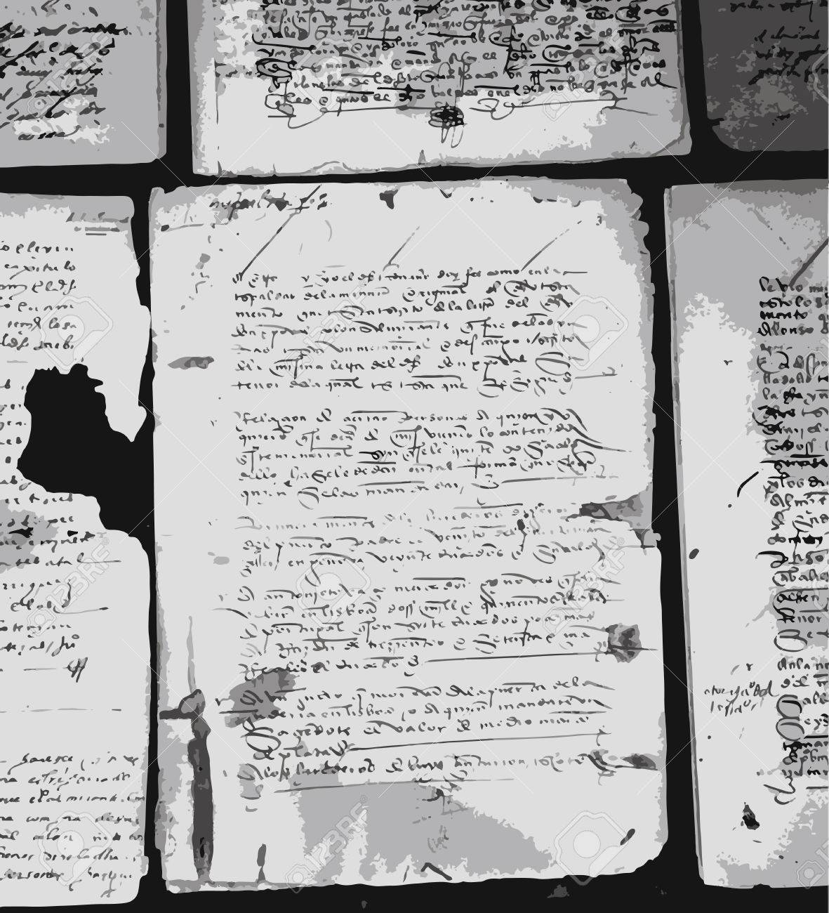
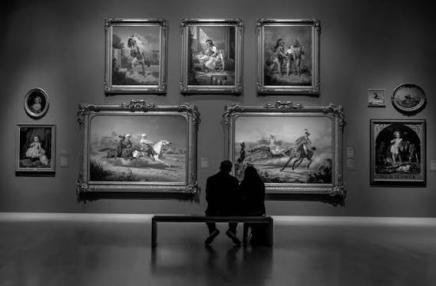

Cartas que nunca enviamos
Mensajes escritos con cariño que se quedaron guardados en un cajón.
ExplorarEntra a un museo donde se guardan cartas, canciones y pequeños momentos, y también todo lo que el tiempo se lleva sin avisar.
Explorar exposiciones
MEMORIA Y OLVIDO. SOLORIO, A.BIENVENIDOS A MEMORIA Y OLVIDO
El Museo Memoria es un museo ficticio dedicado a los recuerdos y al olvido. Sus salas reúnen cartas, fotografías, flores secas y objetos pequeños que nos hacen pensar en las personas que amamos y en lo que pasa con todo aquello que el tiempo va borrando.
RECORRE EL MUSEO
SOMOS NUESTRA MEMORIA